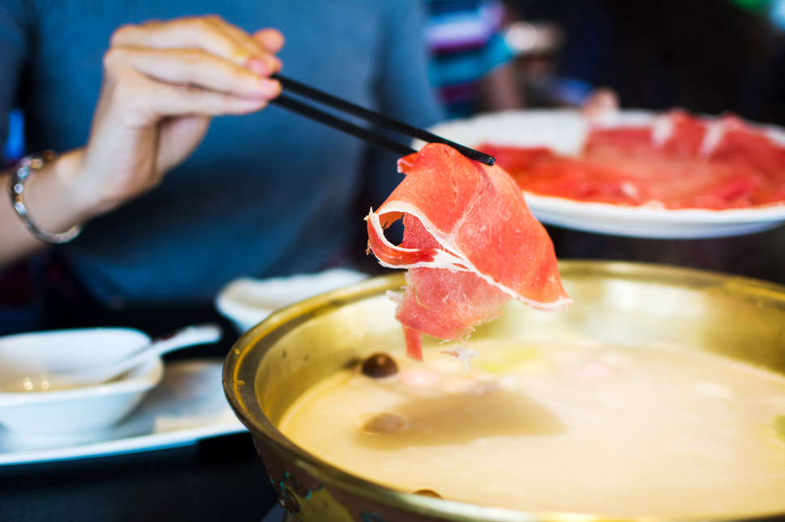

There are a few things to keep in mind as you and your friends dig in. First, cook your ingredients gradually and try to pace it to your eating speed. Remember that the food will be hot when you pull it out, so keep things leisurely, and make sure you wait for the soup to get boiling again between batches. Definitely use the handheld baskets or designated long cooking chopsticks to retrieve your food so you’re not using the same utensils to eat and cook.
Different foods have different cook times. For example, mushrooms might take 5-8 minutes while thin slices of meat will overcook and become tough if boiled longer than 10 seconds. The good rule of thumb is to let hearty, tough greens ride in the pot to soften up while you dip and eat smaller, quicker ingredients. If you’re not sure about your cooking skills, just invite a knowledgeable friend who can take the lead!
Occasionally, your server may bring over a pitcher of broth and replenish your pot with it. If this happens, don’t panic! They’re just rebalancing the flavors and making sure you’re not just sucking down pure spicy oil with your noodles.